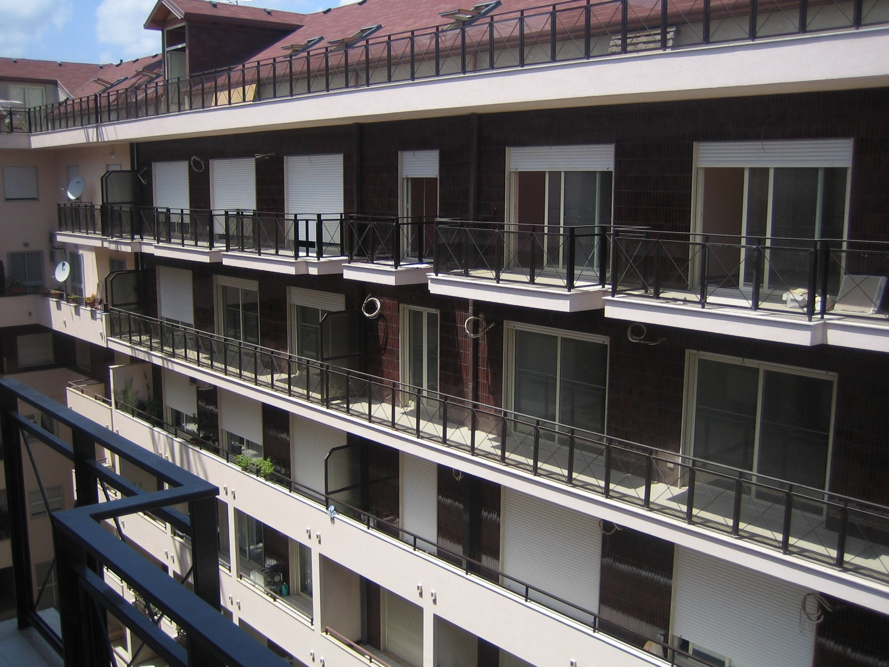
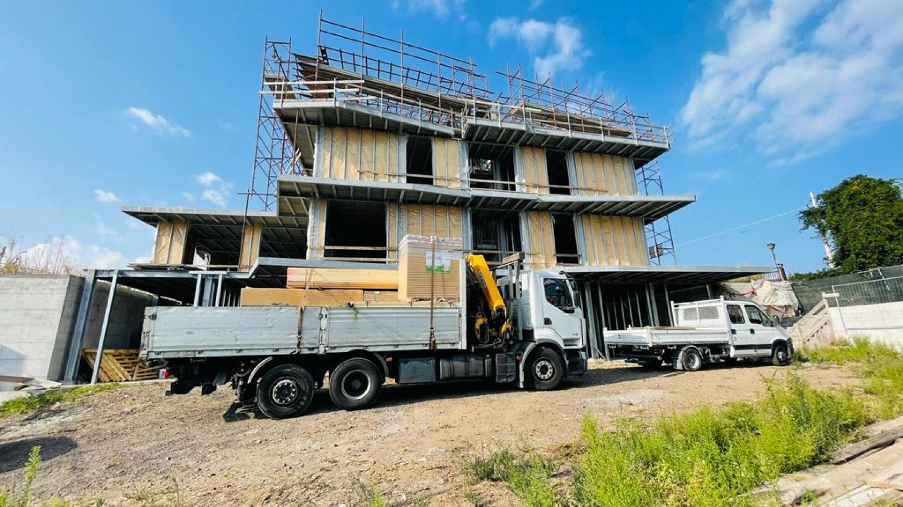
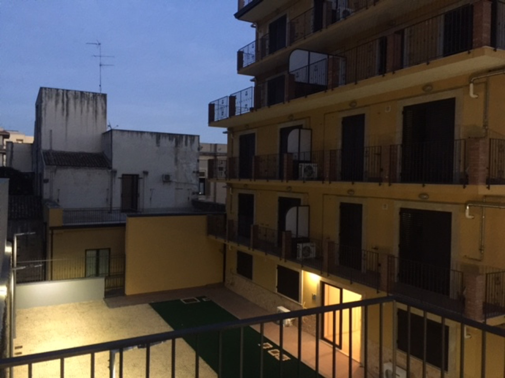
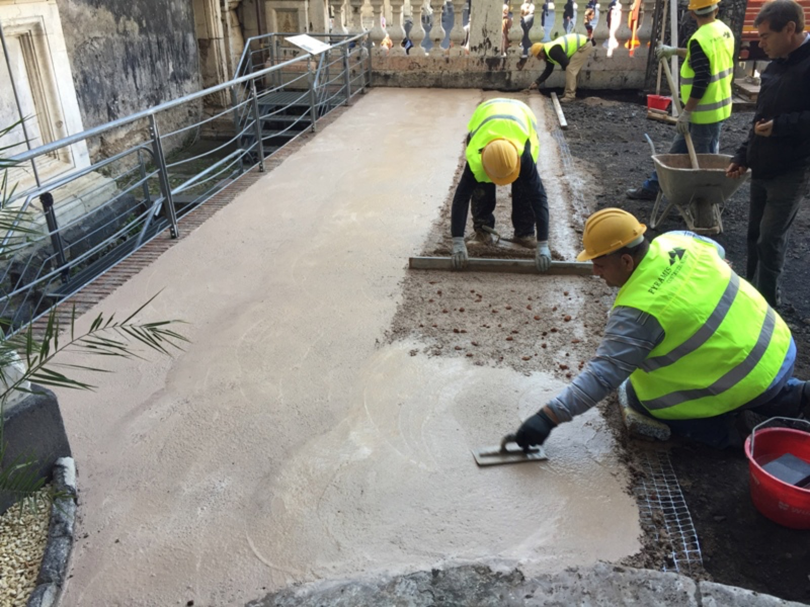
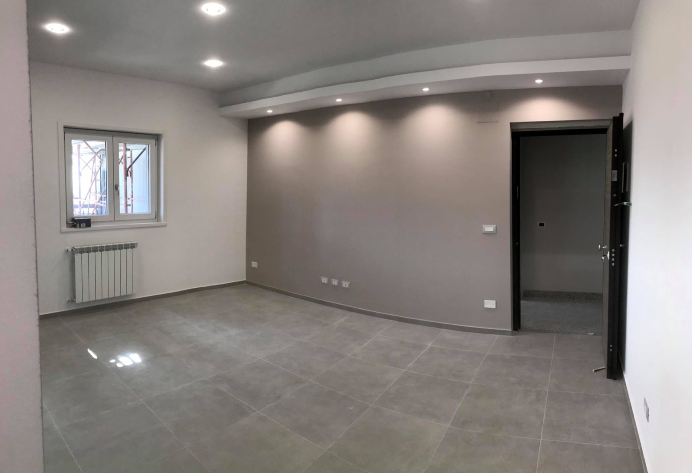
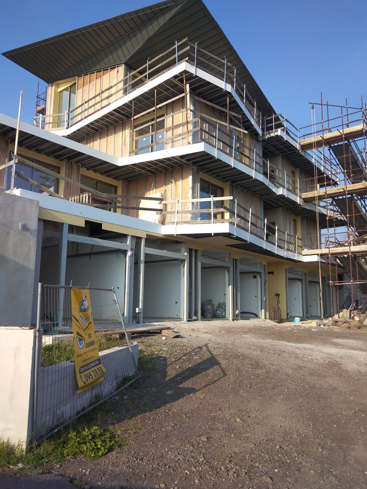

La storia
Tre generazioni, un mestiere:
costruire bene.
Le radici affondano nel 1955, nel cantiere di famiglia. Nel 2003 Antonino Russo e Santa Fazio fondano Pyramis Costruzioni: da allora l'impresa è accreditata presso la Soprintendenza ai Beni Culturali di Catania e l'Arcidiocesi, e firma residenze che guardano avanti.
La famiglia Russo inizia a costruire in Sicilia. Il mestiere passa di mano in mano, di padre in figlio.
Antonino Russo e Santa Fazio fondano la S.r.l. a Catania. Prima l'edilizia civile in appalto tra Catania e Messina, poi l'industriale, il turistico-ricettivo e il restauro monumentale.
65 appartamenti in sopraelevazione dal 3° al 6° piano, con mansarde, garage e un supermercato.

La nuova chiesa di San Paolo Apostolo ad Adrano per l'Arcidiocesi, il restauro del Sacro Cuore ai Cappuccini, la chiesa di San Giuseppe. E l'impianto di depolverizzazione per l'unica acciaieria dell'isola.

Demolizione e ricostruzione della "Casa del Clero Tullio Allegra" per l'Arcidiocesi di Catania.

I lavori che aprono al pubblico le terrazze e la cupola del capolavoro del Vaccarini: oggi "il balcone sul Barocco" è una delle mete più amate di Catania. Nel 2016, la rimozione dell'asfalto dal sagrato della Cattedrale, in accordo con la Soprintendenza.

Nove appartamenti riqualificati ed efficientati a Gravina di Catania, il Residence Acacie ad Augusta: l'efficientamento energetico diventa il terzo mestiere di casa.

Nel centro di Catania nasce un edificio NZEB in classe A4: quasi tutta l'energia che consuma, la produce. La stampa di settore lo racconta come un riferimento del costruire sostenibile in città.

Appartamenti panoramici all'insegna dell'innovazione e dell'ecosostenibilità, alle pendici dell'Etna.
